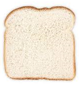
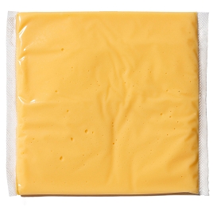
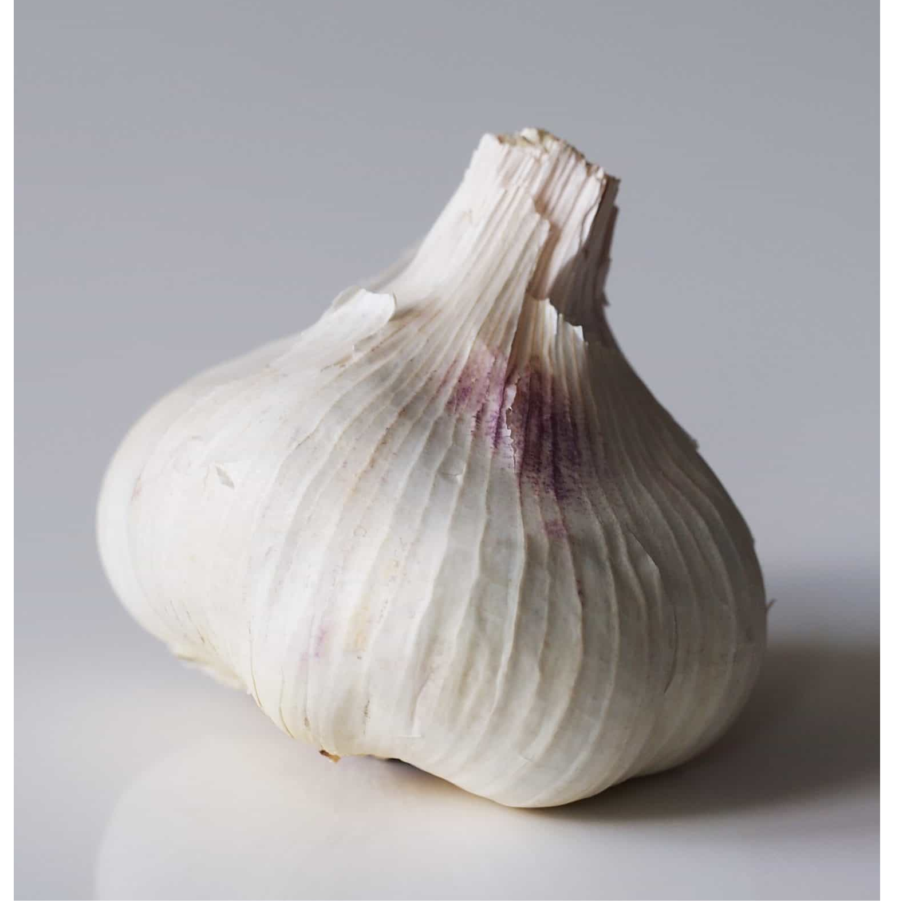
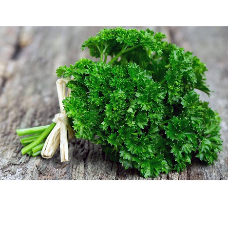

Beyond Warming - Improved food service in Zero-G with novel apparatus and multi component servings¶
An investigative process is proposed to create apparatus for novel cuisine offerings that manages food temperature and facilitates combining elements in weightless human occupancy spaces.
Goals include the enhanced experience of more satisfying meals and even the improved visual appeal of servings. Resource minimized environments like earth orbit and beyond are regarding in the dual technologies of packaging and utilization.
The innovation proposed involves a single device combining some aspects of a wok, refrigerator, oven and table setting into one single user device.
The belief system here is that novel apparatus and preparation ( before lift ), can make foods which are browned, toasted, or baked quite routine. This involves moderate changes to the packaging and the existence of the combining apparatus.
Particularly for long engagements in time clearly food quality matters to minimize all manner of psychological difficulties with the somewhat difficult circumstances. The best outcome of this attempt is a food service process sometimes moving more into the delight of dining, not simply eating to subsist. But longer term this mix and match in a one-of user appliance may be useful to enable other meaningful goals such as fortifying foods and planning for in station production with higher reliability.
How food is combined, matters¶
Visualizing even simple foods as a series of components and ignoring preparation is how an obsession with nutrition alone can made make institutional food depressing.
Clearly a grilled cheese sandwich can be subjectively more then just its 'parts'.
   {kind=link}
{kind=link}
{kind=link}
{kind=link}
But then if ... Well combined:
{kind=link}
Reality has just been ... upgraded !
An improved process for food preparation is the point, not simply a fancy hotplate¶
Food prepared for using this apparatus in flight has packaging and configuration modalities to allow the mix and match of sauces to base meals while retaining layering familiar in prepared cuisines. The concept of a 'sauce' is extended somewhat to include layers of additional edible products; In the context of extending the types of foods and maximizing there appeal possible, the so called sauces are much more important then there role in ordinary food preparation.
Sauces are the conceptual hook in many cases to a better food experience¶
This is 'Beyond warming'; The viscosity of sauces and their offered surface tension is utilized to enable previously hard to provision foods like eggs, pancakes and waffles.
Well constructed sauces of all sorts supplement water infused vacuum packet portions in weightlessness.
Temperature ranges and Browning¶
Heat can be both added and removed using a semiconductor platen. The range of temperature is bounded between -15 C and 180 C and the portion size is generally a single adult serving. This is adequate to brown most breaded product, the configuration of the heat emitters is to be to apply close field radiated heat to surfaces programmably on either of two surfaces. Frequently, these will be differently sequenced both in emission and duration.
The upper range temperature may be contentious. However a range near this is reasonable to create most food surface treatments that can probably be anticiped, the so called Maillard augmentation reaction.
The sauces are provisioned in prepared packages which disappear into the servings, they are constructed of casien, an edible milk by-product.
A longer term agenda is built into a serving controlling apparatus along these lines quite naturally. Locally grown or synthesized products may benefit from reduced temperature. By possibly interfacing to a space heat sinked manifold, energy expenditures can be made trivial. All sorts of food prep tricks can be folded into the idea. The goal is a pan like closed device of considerable flexibility. But the secret, like the old saying, is in the sauce...
Goals¶
Clearly, earth orbit habitation is reasonably well understood yet a few milestones are easy to foresee:
Short term - Better packaged food experiences on I.S.S.¶
A better food experience in earth orbit for foods prepared on earth sent and served in moderate time frames. This innovation may visualize application over a few ones of years from the present moment.
Medium term - Working with thermal management for lunar and beyond safaris¶
Some mix of food sourcing from foods grown / built in space may benefit from 'taking food seriously', not just some liability required to maintain human life... and utilize space as a heatsink to work with cooling as opposed to extreme packaging. Surprisingly, Peltier cooling. matters to reach thermal equilibria between food and the very plentiful space, of `space' outside.
This is far beyond a simple operational investigation of a device and food packaging motif; However one purpose of this blue sky project expenditure is get ready for what's possible `next', and a thermal manifold through the hull of a spacecraft for food preservation is fairly obvious.
Long term - Food production, rendering and presentation in variable environments¶
Aesthetic, Nutrition, and Planning of food sourcing may benefit from more technology support that involves using preferences and single serving motifs to inform off planet food production.
For instance, supporting planning for plant and fish grown in situ may benefit from a continuous, casual 'A.I.' approach towards understanding what each resident and/or traveler will probably demand or require. Serving systems that mix and match urges without wasting source foods is the goal, not 'paperwork' and pre-planned menus.
Similarly, some off planet living may strongly suggest fortified foods. The proposal here most food servings combine layers of material, that is, an extrapolated role for 'sauces', is a fine way to sneak in specific nutrients without making eating and choosing feel repressive !
Implementation errata¶
Of course, this process involves true experimentation, so many factors are completely impossible without lab work. However, this is goal oriented R & D and therefore benefits from visualizing endpoints early on. Some notions of the concept are communicated here via a question and answer format:
Q: How is the food wrapped ? Does it differ from usual air evacuated shrink wrapping ?
The regular air evacuation with plenum product can be heated in the apparatus but it's not the preferred package. The alternative is a sealed plastic bag with Nitrogen fill. The product is less desiccated then the more familiar packaging. Inside the plastic is a three fold tinfoil interior containing the 'main food'.
Q: How much power does it use ? Where does it plug in ?
The device has a handle with three cordsets, 120 VAC, 150 DC and 24 VDC. Each cord has a plug that differs, any connection that fits on earth or space will work. It uses up to 750 Watts max for intermittent time frames.
Q: How does it know how to set its internal settings ?
Products have a QR code and the handle reads it. There is a general paper copy of usual other settings, there is no requirement to follow the directions. All the facts are in the code, there is no requirement for data communications.
Q: How do the 'sauces' match up with the main meals ?
Sauces are more bulk packaged and there also in plastic but inside there in a shaped collet of casein, like thin fabric holding the sauce. Any of them are placed on top of any main dish.
Some have QR code and there not uniform in size except a max thickness.
Q: What is the serving like when its ready ?
The three flap metalized package is folded a second time to make a serving unit. It's always a little coated on the inside with some slight gunk to make the main dish stick a little. The apparatus is not in contact with the main dish. Since each user has their own, a dry wipe is good enough anyway to get any dab of food removed.
Q: How big is it ?
Each one is about the size of a North American sheet of paper ( 8 by 11 inch ), and 6 cm thick.
Q: How does cooling work ?
A long edge has a magnet and a switch and when it desired it goes down in temp and uses the magnet areas as a heatsink. The main purpose is to manage partial servings and make sauces easier to handle; ( not essential ). But as a bonus it can chill beverages, though they will need fussing to get up to a reasonable temperature to drink. A obvious approach is pinch it under a body part for a bit.
Q: These materials seem heavier then there alternatives, probably with more water, for instance. Is this a budget problem of sorts ?
The stability of urine to potable water changes the equation of how much water `loose' needs to go up. Instead of potted water, some water is basically showing up in food and sauces and this is reduced from potable water. That water is very conserved, it is definitely going in and coming out of the residents anyway.
Q: How would yo progress on this project daily ?
Ryerson has a strong program of space science and perhaps I would hook up with them on the prototype cycle. Making objects with STL and PCBs is trivial, its the food and materials that involve the thinking. Without a budget, asking institutions to work on things goes nowhere meaningful. This project has a lot of P.R. and I do not think in the region near Toronto it will be hard to find a helper-home.